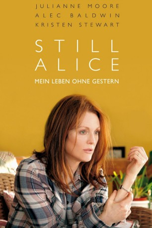

#1541 Still Alice - Mein Leben ohne Gestern
Alternativ: Still Alice
Auszeichnungen: 1 Oscars gewonnen 1 GoldenGlobes gewonnen 1 BAFTA-Awards gewonnen
 
 IMDB-Wertung: 7.5 / 10
IMDB-Wertung: 7.5 / 10  Metascore: 72
Metascore: 72 
Zunächst versucht Dr. Alice Howland, eine anerkannte Sprachwissenschaftlerin, noch ihre Krankheit zu verheimlichen. Gelegentliche Orientierungslosigkeit in den Straßen von Manhattan und Schwierigkeiten, einzelne Wörter zu finden, machen das Leben zwar zunehmend schwerer, doch erst als sie anfängt, auch Menschen zu verwechseln, spricht sie mit ihrer Familie. Ihr liebender Ehemann John ist genauso schockiert wie ihre drei erwachsenen Kinder Anna, Tom und Lydia, als sie erfahren, dass Alice an einer seltenen Form von Alzheimer leidet, die auch vererbbar ist. Mit der Diagnose wird das bislang so perfekt geglaubte Familien- und Alltagsleben, an dem Alice mit allen Mitteln festhalten will, auf eine äußerst harte Probe gestellt.
Jahr: 2014
Dauer: 101 Minuten
FSK: 0
Land: USA Studio: Sony Pictures ClassicsTonspuren: DTS - ,
Untertitel: Deutsch,
Auflösung: 1080p (1920x1040) Größe: 6440 MB
Genre: Drama
Regisseur: Richard Glatzer, Wash Westmoreland
Drehbuch: Richard Glatzer, Wash Westmoreland, Lisa Genova
Soundtrack: Ilan Eshkeri
Darsteller:
 Julianne Moore als Alice Howland
Julianne Moore als Alice Howland Kate Bosworth als Anna Howland-Jones
Kate Bosworth als Anna Howland-Jones Shane McRae als Charlie Howland-Jones
Shane McRae als Charlie Howland-Jones Hunter Parrish als Tom Howland
Hunter Parrish als Tom Howland Alec Baldwin als John Howland
Alec Baldwin als John Howland Seth Gilliam als Frederic Johnson
Seth Gilliam als Frederic Johnson Kristen Stewart als Lydia Howland
Kristen Stewart als Lydia Howland Stephen Kunken als Dr. Benjamin
Stephen Kunken als Dr. Benjamin Erin Darke als Jenny
Erin Darke als Jenny Daniel Gerroll als Eric Wellman
Daniel Gerroll als Eric Wellman- Quincy Tyler Bernstine als Nursing Home Administrator
 Orlagh Cassidy als Primary Care Doctor
Orlagh Cassidy als Primary Care Doctor- Rosa Arredondo als Convention Facilitator
- Dan Adams als Student , uncredited
 José Báez als Head Waiter , uncredited
José Báez als Head Waiter , uncredited Takako Haywood als Alzhiemers Conference Attendee , uncredited
Takako Haywood als Alzhiemers Conference Attendee , uncredited Diane Kimbrell als Alzheimer Patient , uncredited
Diane Kimbrell als Alzheimer Patient , uncredited- Kristin Macomber als Anne , uncredited
- Joanne Perica als Crying woman , uncredited
 Nancy Ellen Shore als Nurse , uncredited
Nancy Ellen Shore als Nurse , uncredited- Eha Urbsalu als Alice's Mother , uncredited
- Gail Yudain als Meeting Attendee , uncredited
- Maxine Prescott als Nursing Home Resident
- Zillah Glory als Masha, Three Sisters
- Caridad Montanez als Elena
- Caleb Freundlich als Young Musician
- Charlotte Robson als Young Musician
- Jean Burns als Olga, Three Sisters , uncredited
- Cat Lynch als Pinkberry Worker , uncredited
- Jamie Lee Petronis als Pinkberry Worker , uncredited
Datei: X:\2014(N-Z)\Still Alice - Mein Leben ohne Gestern (2014, FSKo.Al., 1920x1040).mkv seit 14.07.2015
Festplatte: HD 2013(I-Z)-2014(A-Z)
 Es gibt insgesamt 163 Filme in der Gruppe '2014(N-Z)'
Es gibt insgesamt 163 Filme in der Gruppe '2014(N-Z)'